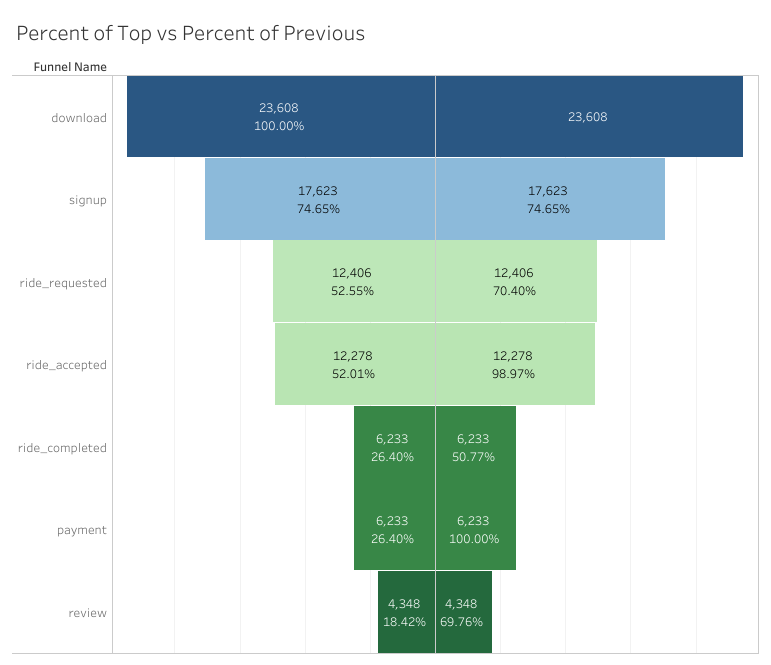
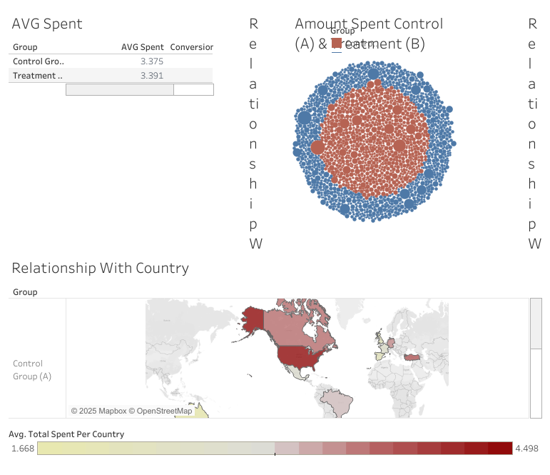

Projects
TEST VIEW SMALL BARS

Analyzed sales data to identify trends and insights. Built interactive dashboards to visualize key metrics.
Methods: Data cleaning in Excel, visualization in Tableau, SQL queries.
Keywords: Data Visualization, Sales Analysis, Tableau Dashboard, SQL
View on Tableau PublicFlight Analysis
Built an interactive dashboard for COVID-19 case tracking using public datasets.
Methods: Data aggregation, geospatial mapping in Tableau.
Keywords: Geospatial Analysis, Interactive Dashboards, Public Health Data
View on Tableau PublicFunnel for Rides App
Performed exploratory data analysis on customer behavior to inform business strategy.
Methods: Statistical analysis in Excel, storytelling with Tableau.
Keywords: EDA, Customer Analytics, Data Storytelling
View on Tableau PublicIndie Games-Dev Per Country and City
Developed a dashboard to optimize inventory levels based on historical sales data.
Methods: Data modeling in Excel, visualization in Tableau, SQL for data extraction.
Keywords: Inventory Management, Data Visualization, SQL, Tableau
View on Tableau PublicProject 1
Evaluated the effectiveness of marketing campaigns through KPI tracking and visualization.
Methods: Data cleaning, Tableau dashboards, statistical analysis.
Keywords: Marketing Analytics, KPI Tracking, Data Visualization
View on Tableau Public